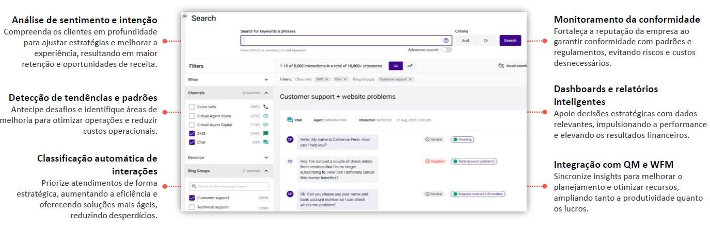

O Interaction Analytics captura, transcreve e analisa todas as interações dos clientes utilizando inteligência artificial para identificar causa raiz da conversa, tópicos e sentimentos.
Usa NLP para identificar emoções, sentimentos e intenções em interações.
Identifica reclamações frequentes e gargalos no atendimento.
Segmenta atendimentos por tema, urgência e sentimento.
Avalia se os agentes seguem scripts e padrões de qualidade.
Visualizações detalhadas e métricas para decisões estratégicas.
Sincroniza insights de performance com qualidade e escalas da equipe.
Se diferencia no mercado por usar inteligência artificial avançada para analisar interações de forma profunda e em tempo real, identificando tendências e padrões de comportamento do cliente com alta precisão.
Com integração nativa ao Talkdesk CX Cloud, oferece uma visão unificada de todos os canais, elimina ferramentas externas e fornece análises automatizadas e relatórios personalizados.
Isso facilita decisões estratégicas e melhora continuamente a experiência do cliente.
Entender metas do cliente (ex.: melhorar qualidade, otimizar desempenho) para personalizar a solução.
Personalizar categorias e KPIs como palavras-chave e tipos de interação.
Integrar com CRMs, canais e sistemas já utilizados pelo cliente.
Capacitar usuários para utilizar e interpretar relatórios corretamente.
Acompanhar e ajustar a plataforma após implantação para garantir resultados.
Definir quem vê o quê, mantendo segurança e foco nos dados relevantes.
Análise automatizada de sentimentos, tópicos e padrões para otimizar atendimento.